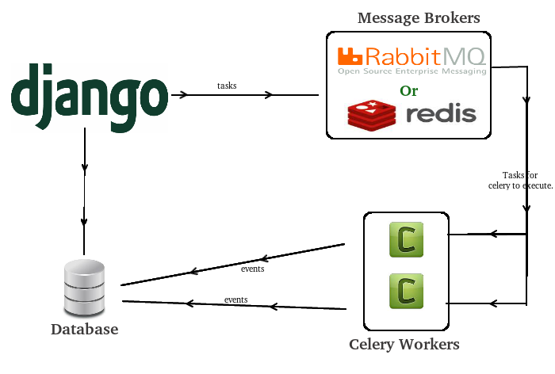

C'est quoi ? Ça se mange ?
Celery est un gestionnaire de tâches asynchrone. Il s'occupe de créer des files d'attentes pour les tâches, de les distribuer sur un ou des workers et d'en répartir la charge. Intégré dans une application web, il va permettre d'ordonner l'exécution de tâches en background.
Cet outil va t'être utile dans de nombreux cas d'usages. Personnellement, je l'utilise pour une application de streaming de vidéos et il me permet de lancer les jobs d'encodage des médias sur différents serveurs.
Mais tu vas pouvoir lui laisser le soin de zipper/dézipper de gros fichiers, générer de nombreux documents pdf, lancer le téléchargement de fichiers en masse ou encore lancer des calculs sur plusieurs machines.
Mais pourquoi utiliser Celery et pas un autre outil ?
Déjà, il est mature et très utilisé dans la communauté Python. Son côté asynchrone lui donne de bonnes performances. De plus, il en existe une intégration dans Django. Il y a des clients implémentés dans d'autres languages, comme php ou node. Grâce à lui, tu vas pouvoir automatiser tout un tas de trucs en répartissant les workers et les clients sur différentes machines.
Broker, quésaco ?
La première notion à connaître est le broker. Il s'agit tout simplement de la file d'attente. Tu vas pouvoir utiliser plusieurs technos pour gérer le broker, comme RabbitMq, Redis, Mongodb, Sqlalchemy, ou même l'orm de Django.
C'est le broker qui va permettre la communication entre le(s) workers(s) et le(s) client(s). La techno recommandée par Celery est RabbitMq, qui utilise le protocole AMQP. Je t'en ai déjà parlé précédemment.
Backend, quésaco ?
La seconde notion à connaître est le backend. Celui-ci est optionnel et permet de monitorer et de garder une trace des états des tâches. Les options de stockage sont quasi-similaires à celle du broker (RabbitMq, Redis, etc ...)
Mon application web qui génère des archives AVANT Celery
Prenons l'exemple d'une petite application web qui a pour objectif de générer un document au format pdf pour chaque usager présent dans une base de données, par année de naissance.
- Étape 1 : choisir une année de naissance
- Étape 2 : cliquer sur "Générer"
- Étape 3 : regarder la roue qui tourne
- Étape 4 : se faire un café
- Étape 5 : contempler la roue qui tourne
- Étape 6 : se faire un autre café
- Étape 7 : 504 Gateway Timeout
Mon application web qui génère des archives AVEC Celery
- Étape 1 : choisir une année de naissance
- Étape 2 : cliquer sur "Générer"
- Étape 3 : choisir une autre année
- Étape 4 : cliquer sur "Générer"
- Étape 5 : choisir une autre année
- Étape 6 : cliquer sur "Générer"
- Étape 7: Mince, il est où mon café ?
Objectif
Pour se faire, l'objectif est d'arriver à une architecture de ce type:

Installation
Tu commences par installer RabbitMq:
- Soit sous Ubuntu (tu prends la dernière version ici):
echo 'deb http://www.rabbitmq.com/debian/ testing main' | sudo tee /etc/apt/sources.list.d/rabbitmq.list
wget -O- https://www.rabbitmq.com/rabbitmq-release-signing-key.asc | sudo apt-key add -
sudo apt-get update && apt-get install rabbitmq-server
- Soit via Docker:
docker run -d --hostname myrabbitmq --name myrabbitmq -p 5672:5672 rabbitmq:3
Puis tu installes Celery avec pip:
pip install celery==3.1.25
Oui je sais, il y a la version 4.1 de Celery qui est sortie cet été. Mais je n'ai pas encore eu le temps de me pencher dessus, donc il faudra sûrement mettre à jour ce tuto à l'avenir ! Désolé mon vieux !
Django - Configuration
Dans ton fichier de settings de django, par exemple myproject/settings.py, tu ajoutes les paramètres suivants:
CELERY_NAME = "myproject"
CELERY_BACKEND = "amqp"
CELERY_BROKER = "amqp://guest@localhost//"
Django - Worker
Ensuite, tu crées ton worker myproject/celery.py:
import os
from celery import Celery
os.environ.setdefault("DJANGO_SETTINGS_MODULE", "myproject.settings")
from django.conf import settings
app = Celery(settings.CELERY_NAME, backend=settings.CELERY_BACKEND
broker=settings.CELERY_BROKER)
app.config_from_object('django.conf:settings')
app.autodiscover_tasks(lambda: settings.INSTALLED_APPS)
@app.task(bind=True)
def debug_task(self):
print('Request: {0!r}'.format(self.request))
Django - Création des tâches
Puis, tu crées les tâches qui vont te permettre de générer les documents pdf dans myproject/apps/myapp/tasks.py:
from celery import shared_task
from celery.signals import task_prerun, task_success, task_failure
from .utils import get_persons_and_generate_pdfs
@shared_task(bind=True) # utile pour les "reusable apps"
def task_generate_archive_files(self, date):
""" generate pdf files """
get_persons_and_generate_pdfs(date)
@task_prerun.connect(sender=task_generate_archive_files)
def start_generate_archive_files(sender=None, *args, **kwargs):
print("Initialisation du statut du lot en base")
@task_success.connect(sender=task_generate_archive_files)
def success_generate_archive_files(sender=None, *args, **kwargs):
print("Modification du statut du lot en réussi")
@task_failure.connect(sender=task_generate_archive_files)
def failure_generate_archive_files(sender=None, *args, **kwargs):
print("Modification du statut du lot en échec")
Django - Appel des tâches
Enfin, tu gères l'appelles des tâches dans myproject/apps/myapp/views.py, par exemple:
from .tasks import task_generate_archive_files
@login_required()
def generate_archive_files(request, *args, **kwargs):
if request.method == "POST":
date = request.POST.get('birth_date')
try:
my_task = task_generate_archive_files.delay(date)
except IntegrityError:
messages.add_message(
request, messages.ERROR, _("A file for one of those persons already exists"))
else:
messages.add_message(
request, messages.INFO, _("A file creation task is scheduled"))
return redirect(reverse("myproject-database:database", "?birth_date={}".format(date)))
else:
return HttpResponseForbidden()
À toi d'adapter le code pour que ça colle avec ton projet, tes urls, et autres. C'est qu'un exemple d'utilisation.
Django - Exécution
Pour exécuter celery, tu peux alors lancer la commande suivante:
celery -A myproject worker -l info
Tu peux même te faire un petit Makefile dans ce genre:
RABBITMQ := rabbitmq-myproject
CELERY := myproject
run-rabbitmq:
docker ps -aq --filter name=$(RABBITMQ) | xargs -r docker rm -f -v && \
docker run -d --hostname $(RABBITMQ) --name $(RABBITMQ) -p 5672:5672 rabbitmq:3
run-celery: run-rabbitmq
celery -A $(CELERY) worker -l info
.PHONY: un-rabbitmq run-celery
Debug
Tu vas alors avoir un écran de debug qui ressemble à ça:
[2016-10-21 16:47:18,568: INFO/MainProcess] Connected to amqp://guest:**@127.0.0.1:5672//
[2016-10-21 16:47:18,615: INFO/MainProcess] mingle: searching for neighbors
[2016-10-21 16:47:19,628: INFO/MainProcess] mingle: all alone
[2016-10-21 16:50:23,354: INFO/MainProcess] Received task: myproject.apps.file.
tasks.task_generate_archive_files[1755cd30-03f5-4d8a-8d92-fa5b1853a209]
...
...
...
[2016-10-21 16:50:26,944: INFO/MainProcess] Task myproject.apps.file.
tasks.task_generate_archive_files[1755cd30-03f5-4d8a-8d92-fa5b1853a209]
succeeded in 3.588768539018929s: '1755cd30-03f5-4d8a-8d92-fa5b1853a209'
Tests unitaires
Pour lancer des tests unitaires sur tes tâches dans ton projet Django, tu peux utiliser le paramètre suivant dans tes settings:
CELERY_ALWAYS_EAGER = True
Ça permet de tester les tâches Celery de manière synchrone et sans broker (il utilise un genre de broker en mémoire).
Déploiement avec init.d
Il existe un dépôt d'helpers pour déployer avec init.d ou systemd. Par exemple pour init.d :
- Mettre le fichier celeryd du dépôt d'helpers dans /etc/init.d.
- Mettre la configuration suivante dans /etc/default/celeryd:
export DJANGO_SETTINGS_MODULE="myproject.settings"
CELERYD_NODES="worker1"
CELERY_BIN="/home/myuser/.virtualenvs/myproject/bin/celery"
CELERY_APP="myproject"
CELERYD_CHDIR="/home/myuser/myproject"
CELERYD_OPTS="--time-limit=300 --concurrency=8"
CELERYD_LOG_FILE="/var/log/celery/%N.log"
CELERYD_PID_FILE="/var/run/celery/%N.pid"
CELERYD_USER="myuser"
CELERYD_GROUP="mygroup"
CELERY_CREATE_DIRS=1
Monitoring - Exemples
- Voir le résultat d'une tâche :
celery -A myproject result -t tasks.add 4e196aa4-0141-4601-8138-7aa33db0f577
- Voir liste des workers actifs :
celery -A myproject status
- Voir les tâches actives :
celery -A myproject inspect active
- Voir les statistiques des workers :
celery -A myproject inspect stats
- Sinon, il existe le projet flower pour monitorer et administrer les workers et les tâches via une appli web.
En vrac
Quelques tips en vrac:
- Cron-like :
@periodic_task(run_every=crontab(hour='5,13,23', minute=30, day_of_week='monday'))
def mytask():
...
- Sqlite n'aime pas les accès concurrents
- Purger les tâches en attentes :
celery -A proj purge
- Récupérer le statut d'une tâche :
result = my_task.AsyncResult(task_id)
result.state
- Attendre le résultat d'une tâche :
result = my_task.AsyncResult(task_id)
result.get()
- Appeler une tâche par son nom depuis une autre machine :
from celery import Celery
celery = Celery()
celery.config_from_object('celeryconfig')
celery.send_task('tasks.add', (2,2))
- Appeler une tâches via HTTP :
from celery.task.http import URL
res = URL('http://example.com/multiply').get_async(x=10, y=10)
- On peut appeler une tâche dans une tâche !
- Pour l'optimisation, la sécurité, les extensions, la concurrence, voir la doc officielle.